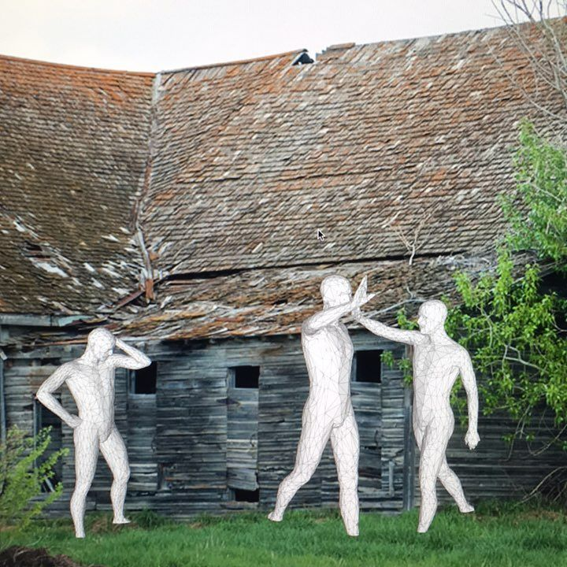
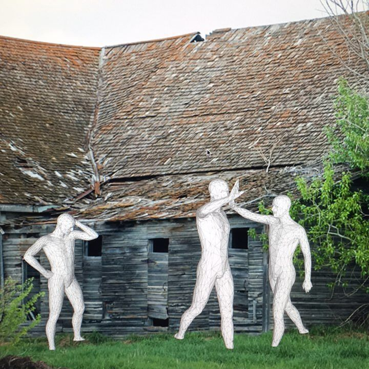

Walls: Retaining Memory examines the nature of the experiences of living on a homestead or in an abandoned town from the remaining walls. It is based off two phrases: What if these walls could talk and You can't tell the book by it's cover. It is inspired from standing in a ruined structure and imagining how the space was used.
This work is presented as a series of small house-shaped boxes displayed on folding card tables with occassional folding chairs available. In another room is a table with numerous shapes based off the walls, gables and roofs of these house-shaped boxes. The dimansion of the boxes is similar to the simple grainaries used on farms. A small, sturdy structure that is sometimes the last to collapse because of their strentgh needed for the original use.
This work was originally presented in the emptied store location of the Fine Arts Department at the University of Calgary, chosen for it's resemblance to a tired downstairs meeting space in a community center or church.
This work considers the experiences of living on a site as being similar to a liquid, pooling around the remaining surfcaces and staining them with the moments of a lifetime. As an explorer of abandones spaces I try to imagine the way they were used through interpreting the scars, marks and modifications on the walls.
The small house-shaped objects can be opened, their interior showing a landscape, photographic hints and typed text, as well as a floorplan of the original farm house. They can be closed back again due to hidden magnets and strips of metal.
The collection of walls, gables and roofs are covered with images and designs, and can be rebuilt into houses because they also incorporate magnets. They are a chance to find images and designs that rekindle personal memories to recreate lost homes.
This work is part of a body of work that explores my relationship to the abandoned and forgotten inhabieted spaces remaining from the Homestead Era in Canada.

 
